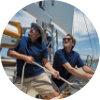
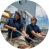

波賽頓

波賽頓
型號：HANSE458
主責船長：駱海仁（4.0）
船隻駐點：甲必丹12號分港（宜蘭烏石）
服務項目：遠航│無限暢飲│橡皮艇
現行方案：【牛奶海烤肉趴！龜山島半日遊】
成團人數：5-8
方案價格：＄4,500 / 人
 注意事項
注意事項
-
行程與服務
│牛奶海烤肉趴！龜山島半日遊│
★ 目的地：宜蘭縣龜山島週邊
★ 出發地：甲必丹12號分港（宜蘭烏石）
★ 成團人數：5-8
★ 行程時間：4小時
★ 方案計價：4,500元 / 人
☆ 服務包含：
- 專業船長、水手各一名
- 冰箱、微波爐、烤箱、瓦斯爐
- 無限暢飲：飲用水、軟性飲料、啤酒
- 水上充氣玩具、SUP立式划槳
- 船外機橡皮小艇
- AROPEC進口救生衣、漂浮用具、魚雷浮標
- 航程中乘客意外安全保險 1. 行前安全宣導
1. 行前安全宣導
 2. 出航前往龜山島牛奶海域
 3. 親自體驗操作主帆前帆樂趣
2. 出航前往龜山島牛奶海域
 3. 親自體驗操作主帆前帆樂趣 4. 於平靜水域下海玩SUP及各類水上充氣玩具
4. 於平靜水域下海玩SUP及各類水上充氣玩具
 5. 後花園水域內烤肉吃喝
5. 後花園水域內烤肉吃喝
 6. 返航回12號分港
1. 行前安全宣導
2. 出航前往龜山島牛奶海域
3. 親自體驗操作主帆前帆樂趣4. 於平靜水域下海玩SUP及各類水上充氣玩具
5. 後花園水域內烤肉吃喝
6. 返航回12號分港
6. 返航回12號分港
1. 行前安全宣導
2. 出航前往龜山島牛奶海域
3. 親自體驗操作主帆前帆樂趣4. 於平靜水域下海玩SUP及各類水上充氣玩具
5. 後花園水域內烤肉吃喝
6. 返航回12號分港
船型概覽
HANSE458
長寬：14.04*4.38 m
發動機：57hp
認證級別：A
設計：Judel/Vrolijk&Co
HANSE458
長寬：14.04*4.38 m
發動機：57hp
認證級別：A
設計：Judel/Vrolijk&Co
甲必丹
駱海仁

（4,956）不說您可能不知道，駱船長起初是一位立法委員。 2028年立委選舉前，他曾允諾：敵對政黨若在臺北市8席全上（俗稱八仙過海），便將跳海。 結果對造真的達標，自己也不幸落選，駱遂於建築中的甲必丹外港，騎乘水上摩托車出海，並縱身跳入冷冽汪洋。
這次經歷使駱的名聲更喧，且觸動他深埋心底已久、對海洋的無限憧憬。 事後，駱加入了甲必丹，並成為一艘HANSE458的船長。 基於長年問政和選民服務的經驗，駱的口條犀利且善於應付各階層的遊客，他的人氣不斷攀升，並在2033年榮獲「甲必丹年度業績先鋒」獎章。
駱船長的座艦是「波賽頓」號。基礎服務項目有：「遠洋」、「無限暢飲」和「橡皮艇」，亦可加價客製化。 駱船長有時會演奏小提琴，且不介意遊客在船上吸菸和談論政治。
-

最新款的HANSE508-最高等級 速度性 穩定性 安全性
有剛勁的船體線條，卓越的速度，高桅杆，大面帆，可選雙前帆，這些特點都設定了同級別的最高標準，十分驚豔。 HANSE508是由世界上最優秀最有經驗的設計公司judel / vrolijk & co設計的，水準佈局與預平衡舵的相互作用，保證了驚人的速度性能、穩定性和安全性。
HANSE508沿襲了漢斯首創的特點：輕鬆駕駛。
 在舵手位置使用2個絞盤，配合自動調整前帆系統，便可輕鬆完成收帆，換帆等一系列動作。
在舵手位置使用2個絞盤，配合自動調整前帆系統，便可輕鬆完成收帆，換帆等一系列動作。

隱藏式的繩索
保證了甲板的乾淨和整潔，您可以盡情享受無敵視野和超大的放鬆空間。現代航海，精益求精，舒適自在。液壓游泳平臺，輕鬆收放。 駕駛區水吧，帶水槽，燒烤和冰箱。可選升降桌。
駕駛區水吧，帶水槽，燒烤和冰箱。可選升降桌。

全新的內飾空間佈局 設計先進 科學合理
一面式的廚房，佈局合理，令客廳空間更加寬敞。超多的儲物空間，可分類放置各種用品。 全景玻璃天窗，增加了更多的自然光線，艙內更加通透明亮。
靜音主艙，超大的雙人床，現代簡潔的設計，獨享安靜的舒適的私密空間。 尾艙可做小孩房或客房。
尾艙可做小孩房或客房。
- 阿呆阿瓜
類似的船型還有...

流浪者
 10
10

艾瑞克森
6